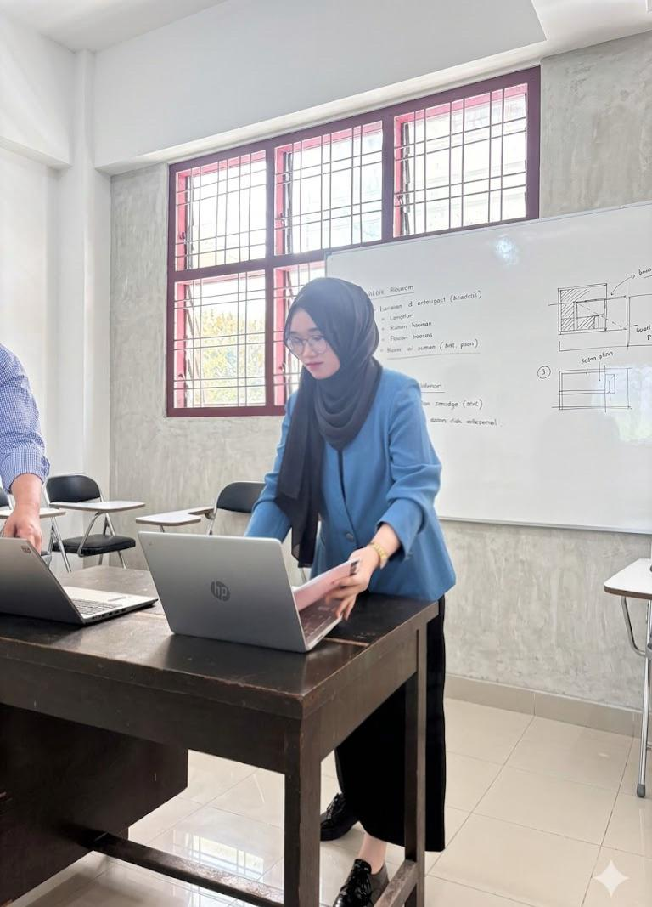

| Nama | Riana Khairunnisa |
| NIM | 240820023 |
| Program Studi | Informatika |
| Semester | 5 |
| Kampus | ISTP |
Hallo Friends! Perkenalkan, nama saya Riana Khairunnisa, NIM 240820023, anak Informatika ISTP yang sekarang lagi berjuang di semester 5. Kalau soal nama sih kayaknya udah pada hafal ya, apalagi buat yang satu jurusan. Tapi kalau mau kenal saya lebih jauh, yuk lanjut baca cerita saya dibawah ini.
saya lahir 18 februari 2006 Saya ini anak bungsu dari tujuh bersaudara. Iya, tujuh! Kata orang tua dulu sih "banyak anak banyak rezeki" nah keluarga saya salah satu buktinya kayaknya. Tapi karena anak bungsu, otomatis saya jadi "kejar-kejaran" sama umur orang tua. Mama saya berpulang waktu saya masih 9 tahun, jadi sejak itu saya dibesarkan oleh bapak yang menurut saya luar biasa hebat.
Cerita masuk dunia IT-nya juga nggak kalah lucu. Dulu waktu lulus SMP, nilai saya lumayan bagus sampai direkomendasikan masuk SMK Penerbangan. Tapi saya malah pilih sekolah di tempat bapak saya sekolah dulu, SMK Negeri 1 Lubuk Pakam sekolah favorit di daerah saya, sampai-sampai dari geng SMP saya cuma saya sendiri yang lolos ke sana.
Niat awal saya masuk Teknik Sipil dan Arsitektur, soalnya ngerasa jago gambar bangunan 3D (modal nyontek tugas kakak yang lagi kelas 3 SMA, hehe). Tapi bapak saya dengan santainya bilang, "Masuk TKJ aja, biar nanti kerja di kantor." Dan sebagai anak soleha yang rajin menabung dan tidak sombong Hahaha, ya saya nurut aja walaupun sekolahnya jauh, 45 menit dari rumah, dan nggak ada temen SMP yang bareng. Modal nekat dan pede doang! Di TKJ ini saya jadi punya pengalaman gaya "teknisi lapangan" manjat tiang, pasang kabel, pasang antena, Sambil dalam hati mikir, "ini kok kayaknya bukan kerjaan kantoran deh". pernah juga pkl di Kominfo Deli Serdang dibagian persandian keamanan informasi dan statistik Tapi disitu tugas saya hanya Monitoring website kecamatan saja dan ya bantu bantu saja alhamdulillah pkl gapernah disuruh buat kopi atau disuruh fotocopy berkas aja udh alhamdulillah wkwkwk
Lulus SMK,Saya dapat siswa Eligible tapi sayangnya ga rejeki lewat SNBT. tapi Saya dapat beasiswa 60% BUMANTARA iya sekolah penerbangan lagi ntah ada apa dengan penerbangan kok nyasar ke saya yang tingginya 157cm ini wkw. saya juga sempat nyoba dan lolos seleksi beasiswa Telkom University bandung sampai tahap wawancara online. Tapi ya namanya restu orang tua nomor satu, karena saya anak perempuan yang bakal merantau jauh tanpa saudara, izin nggak dikasih. Sempat down juga, tapi akhirnya saya bangkit saya sekitar 1 atau 2 bulanan bantu di Tata usaha smp saya dulu, dan malah dapat kerjaan sebagai admin di kantor PDI Perjuangan, bantu-bantu urusan pemilu dan kegiatan sosial lewat program Bapak Sofian Tan. Dari sanalah akhirnya saya dapat beasiswa kuliah Informatika di ISTP ini.
Setelah kerja setahun, saya putuskan pakai beasiswa itu buat lanjut kuliah. Tapi perjalanan kuliah saya juga nggak semulus itu, sejak semester 2, saya kuliah sambil bolak-balik nemenin bapak cuci darah, tiga kali seminggu, kadang sampai 12 jam. Jadi rutinitas saya waktu itu pulang kuliah, langsung ke rumah sakit. Sampai akhirnya bapak saya berpulang di bulan Mei 2025.
untuk ngisi waktu luang saya suka:
Hasil editannya biasanya berakhir saya post ke sosial media juga, sekalian kasih makan sosmed biar nggak garing wkwk.
Sekarang, saya lanjutin kuliah ini bukan cuma buat diri sendiri, tapi juga buat mewujudkan mimpi mama dan bapak, meskipun mereka nggak bisa lihat langsung. saya juga berterimakasih kepada kakak- kakak saya yang selama ini mensupport adiknya. Walaupun S1 saya bukan di kampus impian,dan penuh lika liku dikampus ini, tapii saya tetap bangga bisa sampai sejauh ini. Ke depannya, mimpi terbesar saya adalah bisa lanjut S2 di kampus impian dan kerja dikantor impian bapakku itu.